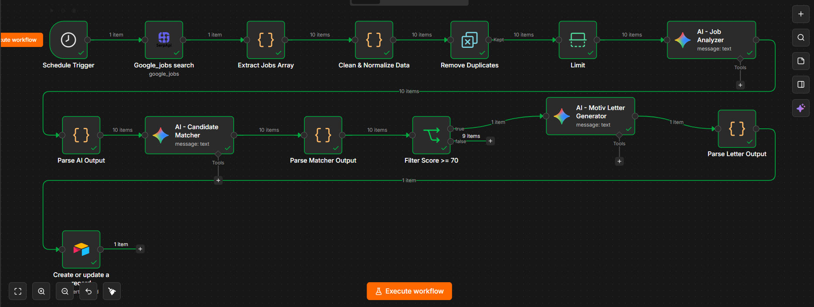
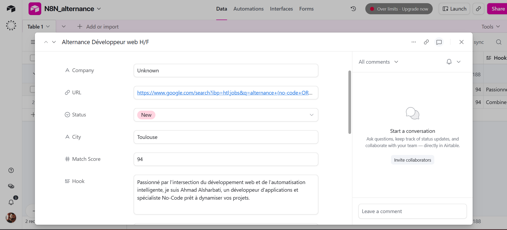
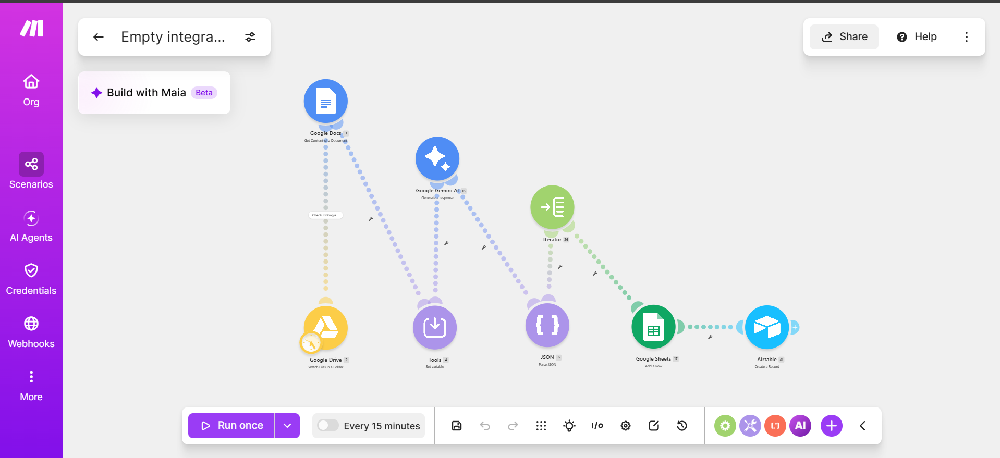
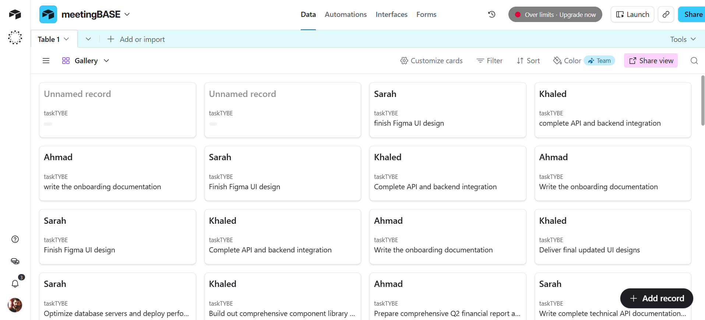
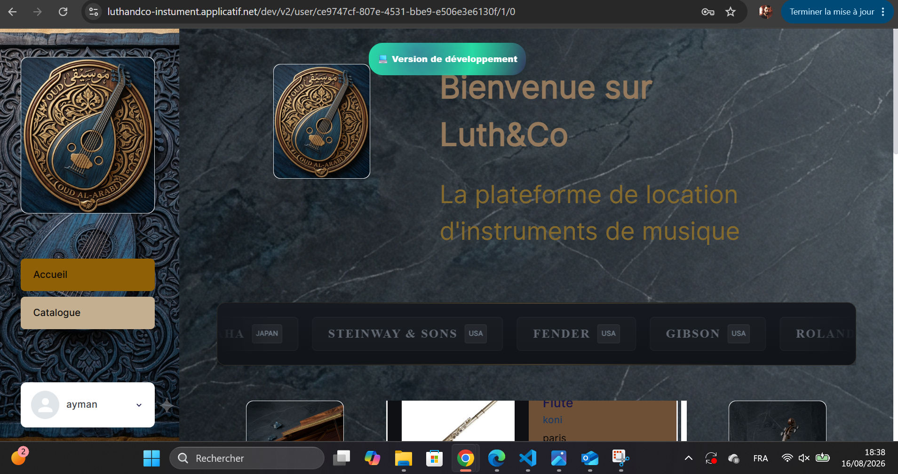
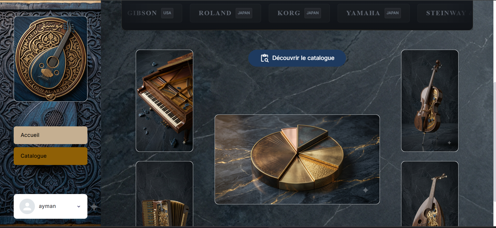

Passionné par le numérique, avec un intérêt particulier pour l'automatisation. Actuellement à la recherche d'une alternance pour la formation de concepteur développeur d'applications.
En savoir plus →Passionné par le numérique, avec un intérêt particulier pour l'automatisation, je me forme en autodidacte depuis 2024. Artiste, mécanicien, mais aussi entrepreneur, j'aime créer et innover, transformer des idées en projets concrets et trouver des solutions logiques aux problèmes. Motivé, curieux et disposant d'une grande capacité d'adaptation, je suis actuellement à la recherche d'une alternance pour débuter la formation qualifiante de concepteur développeur d'application au sein de l'AFPA.


Workflow n8n qui collecte automatiquement les offres d'emploi et d'alternance depuis Google Jobs, analyse chaque offre avec l'IA, compare les compétences requises avec mon profil, et calcule un score de correspondance. Au-delà de 70%, une lettre de motivation personnalisée est générée automatiquement par IA. Tout est organisé dans Airtable avec un suivi par statut (Nouveau / Postulé / Rejeté).


Scénario Make qui traite les transcriptions de réunions Google Meet, génère automatiquement un résumé structuré, identifie les tâches à accomplir, les assigne à chaque membre de l'équipe avec une échéance, puis organise le tout dans Airtable.


Plateforme No-Code de location d'instruments de musique, développée dans le cadre de ma formation. Catalogue d'instruments par marque, système de réservation et interface utilisateur soignée.
Utilisation de Postman pour tester des API REST. Lecture et analyse des réponses au format JSON.
Découverte d'une plateforme d'intégration. Installation et configuration de l'environnement de travail. Compréhension des flux applicatifs et de l'architecture logicielle.
Fondation et pilotage de l'école : définition de la stratégie pédagogique et gestion globale. Recrutement, sélection et coordination des professeurs. Enseignement du Oud (musique orientale).
Création et gestion complète de l'établissement (aspects financiers, logistiques et administratifs). Management d'équipe : recrutement, formation et encadrement. Conception et organisation d'événements culturels.
Intéressé par une alternance ou une collaboration ? Contactez-moi.
M'écrire ✉ahmadsharabti.53@gmail.com
📍 1 Sq. des Hautes Ourmes, 35200 Rennes | 📞 07 49 25 95 92